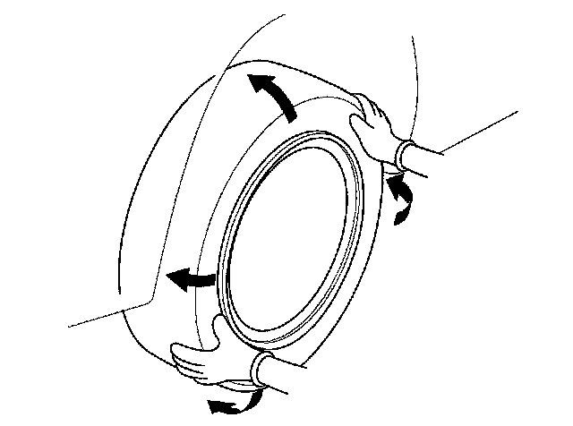
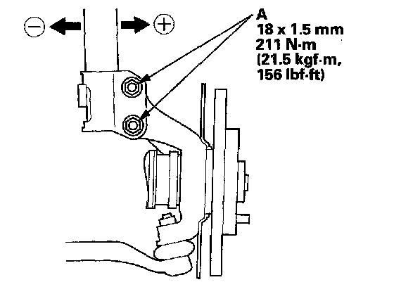
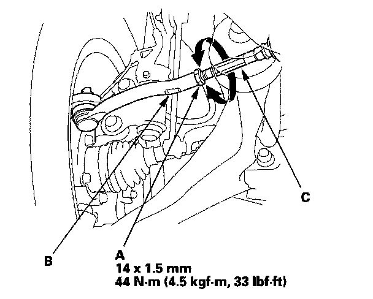
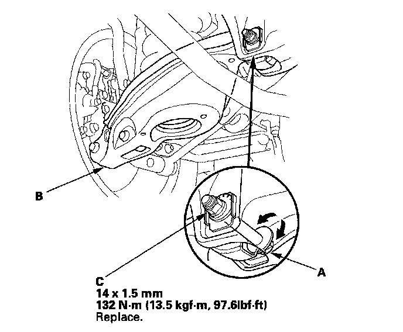
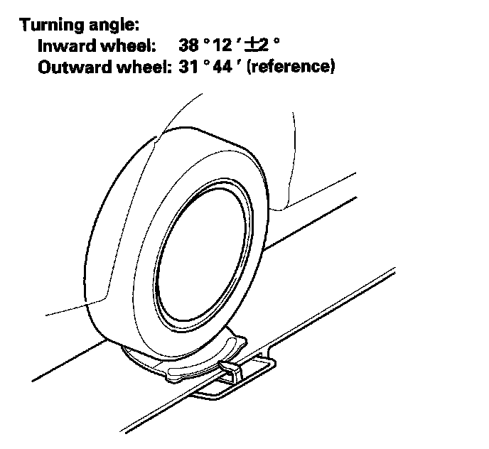

Alignment: Service and Repair
Wheel AlignmentThe suspension can be adjusted for front camber, front toe, and rear toe. However, each of these adjustments are related to each other. For example, when you adjust camber, the toe will change. Therefore, you must adjust the front wheel alignment whenever you adjust camber or toe.
Pre-Alignment Checks
For proper inspection and adjustment of the wheel alignment, do these checks:
1. Release the parking brake to avoid an incorrect measurement.
2. Make sure the suspension is not modified.
3. Check the tire size and pressure.
Tire size:
Front/Rear: P255/55R18 104H
Tire pressure:
Front/Rear: 220 kPa (2.2 kgf/cm2, 32 psi) cold
4. Check the runout of the wheels and tires.
5. Check the suspension ball joints. (Hold a tire with your hands, and move it up and down and right and left to check for wobbling.)

6. Bounce the vehicle up and down several times to settle the suspension.
Caster Inspection
Use commercially available computerized four wheel alignment equipment to measure wheel alignment (caster, camber, toe, and turning angle). Follow the equipment manufacturer's instructions.
Check the caster angle.
Caster angle: 4°12' ± 35'
^ If the measurement is within specifications, measure the camber angle.
^ If the measurement is not within specifications, check for bent or damaged suspension components.
Camber Inspection
Use commercially available computerized four wheel alignment equipment to measure wheel alignment (caster, camber, toe, and turning angle). Follow the equipment manufacturer's instructions.
Check the camber angle.
Camber angle:
Front: -0°30' ± 1°
Rear: -0°30' ± 45'
^ If the measurement for the front camber is outside the specification, go to front camber adjustment.
^ If the measurement for the rear camber is outside the specification, check for bent or damaged suspension components.
Front Camber Adjustment
1. Raise the front of the vehicle, and support it with safety stands in the proper locations.
2. Remove the front wheels.
3. Loosen the damper pinch bolts (A) and bolts, and adjust the camber angle by moving the bottom of the damper within the range of the damper pinch bolt free play.

4. Tighten the damper pinch bolts to the specified torque.
5. Reinstall the front wheels. Lower the front of the vehicle to the ground, and bounce the front of the vehicle up and down several times to stabilize the suspension.
6. Measure the camber angle.
^ If the measurement is within specification, measure the toe-in.
^ If the measurement is not within specification, check for bent or damaged suspension components.
Front Toe Inspection/Adjustment
Use commercially available computerized four wheel alignment equipment to measure wheel alignment (caster, camber, toe, and turning angle). Follow the equipment manufacturer's instructions.
1. Center the steering wheel spokes, and install a steering wheel holder tool.
2. Check the toe with the wheels pointed straight ahead.
Front toe-in: 0 ± 2 mm (0 ± 0.08 in.)
^ If adjustment is required, go to step 3.
^ If no adjustment is required, go to rear toe inspection/adjustment.
3. Loosen the tie-rod locknuts (A) while holding the flat surface sections (B) of the tie-rod end with a wrench, and turn both tie-rods (C) until the front toe is within specifications.

4. After adjusting, tighten the tie-rod locknuts. Reposition the rack-end boot if it is twisted or displaced.
5. Go to rear toe inspection/adjustment.
Rear Toe Inspection/Adjustment
Use commercially available computerized four wheel alignment equipment to measure wheel alignment (caster, camber, toe, and turning angle). Follow the equipment manufacturer's instructions.
1. Release the parking brake to avoid an incorrect measurement.
2. Check the toe.
Rear toe-in: 2 ± 2 mm (0.08 ± 0.08 in.)
^ If adjustment is required, go to step 3.
^ If no adjustment is required, remove the alignment equipment.
3. Hold the adjusting bolt (A) on the trailing arm (B) and remove the self-locking nut (C).

4. Replace the self-locking nut with a new one, and lightly tighten it.
NOTE:
^ Always use a new self-locking nut whenever it has been loosened.
^ Reassemble the adjusting bolt and camplate with the eccentric facing up.
5. Adjust the rear toe by turning the adjusting bolt until the toe is correct.
6. Tighten the new self-locking nut while holding the adjusting bolt.
Turning Angle Inspection
Use commercially available computerized four wheel alignment equipment to measure wheel alignment (caster, camber, toe, and turning angle). Follow the equipment manufacturer's instructions.
1. Turn the wheel right and left while applying the brake, and measure the turning angle of both wheels.

2. If the turning angle is not within the specifications, check for bent or damaged suspension components.